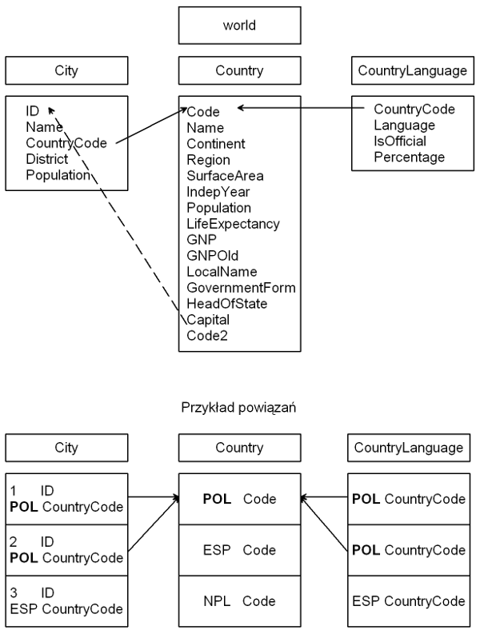

Relacyjne bazy danych w interpretacji MySQL - podstawy
Ćwiczenie 4
Połączenie z serwerem MySQL
- Zaloguj się na swoje osobiste konto na serwerze info3.meil.pw.edu.pl (dostęp do bazy danych jest możliwy tylko z tego serwera).
- Klient MySQL’a uruchamia komenda:
mysql -u studXXProgram wita nas krótkim komunikatem oraz znakiem zachęty:
po którym wpisujemy polecenia. Każda instrukcja powinna być zakończona średnikiem. W przeciwnym wypadku po wciśnięciu klawisza enter program wyświetli znak
oznaczający, że oczekiwany jest ciąg dalszy polecenia. 3. Dostępne bazy danych możemy wyświetlić za pomocą instrukcji:
- My chcemy skorzystać z bazy danych o nazwie world:
Baza danych world
Sprawdż jakie tabele zawarte są w bazie danych world:
Okaże się, że są to: City, Country i CountryLanguage. Informacje jakie są przechowywane w poszczególnych tabelach (definicję tabeli) wyświetli poniższe polecenie, np. dla tabeli City:
Sprawdź jakie wartości przechowują poszczególne tabele.
Zapytania podstawowe (zapytanie - query)
- Wyświetl wszystkie informacje zawarte w tabeli Country:
- Wyświetl wartości wszystkich rekordów dla dwóch pól (kolumn) (np. Name i Region):
- Wyświetl nazwy wszystkich państw leżących w Europie wraz z długością życia ich mieszkańców:
- Wyświetl nazwy wszystkich państw leżących w Europie i Azji wraz z długością życia ich mieszkańców:
- Wyświetl informację z punktu poprzedniego, ale posortowaną względem długości życia (dodaj do poprzedniej komendy frazę –
ORDER BY LifeExpectancy). - Wyświetl liczbę ludności żyjącej w Europie:
- Znajdź średnie zaludnienie krajów w Europie:
- Znajdź nazwy i kody wszystkich państw, których nazwy zaczynaj się od “Ch”:
- Wyświetl wszystkie informacje o miastach w Finlandii (CountryCode Finlandii to “FIN”):
- Wyświetl wszystkie informacje o miastach w Polsce (CountryCode Polski to “POL”) i posortuj je według województw:
- Wyświetl nazwy krajów, które uzyskały niepodległość po roku 1980. Wyświetl również rok uzyskania niepodległości.
- Wyświetl nazwy krajów Ameryki Północnej, które uzyskały niepodległość pomiędzy rokiem 1800 a rokiem 1900. Wyświetl również rok uzyskania niepodległości. Posortuj dane według tej daty:
Zapytania bardziej zaawansowane
- Wyświetl nazwy miast o ludności przekraczającej 3 000 000. Wyświetl również kody państw, w których te miasta leżą i liczbę ludności. Posortuj dane w kolejności malejącej według kodu kraju, a następnie według populacji (w przypadku alfabetu, kolejność malejąca oznacza porządek od Z do A):
SELECT Name, CountryCode, Population FROM City
WHERE Population > 3000000
ORDER BY CountryCode DESC, Population DESC;- Wyświetl wszystkie miasta w Norwegii (załóż, że nie znasz wartości CountryCode tego państwa):
- Wyświetl nazwę najbardziej zaludnionego państwa w Ameryce Południowej. Obok nazwy wyświetl liczbę jego ludności:
SELECT Name, Population FROM Country
WHERE Population=
(SELECT MAX(Population) FROM Country
WHERE Continent='South America');W tym przypadku otrzymamy Brazylię jako jedyny wynik. Przedstawione rozwiązanie nie jest jednak jednoznaczne! Mogło by się zdarzyć, że otrzymana maksymalna wartość populacji występuje nie tylko na kontynencie południowoamerykańskim. Wynik należy uściślić:
SELECT Name, Population FROM Country
WHERE Population=
(SELECT MAX(Population) FROM Country
WHERE Continent='South America')
AND Continent='South America';- Wyświetl liczbę państw leżących na każdym kontynencie:
- Wyświetl nazwy wszystkich stolic Europejskich (wykorzystaj fakt, że kolumna ID w tabeli City odpowiada kolumnie Capital w tabeli Country):
Tak skonstruowane zapytanie działa bardzo wolno ponieważ sprowadza się do wielokrotnego przeszukiwania tabeli Country. W takich przypadkach należy wykorzystać łączenie tabel i posłużyć się konstrukcją tab1 INNER JOIN tab2 ON condition
- Wyświetl informacje o językach używanych w europejskich państwach:
SELECT Country.Name, CountryLanguage.Language FROM Country
INNER JOIN CountryLanguage
ON Country.Code=CountryLanguage.CountryCode
WHERE Country.Continent='Europe';- Wyświetl nazwę i powierzchnię najmniejszego państwa na świecie:
- Wyświetl nazwę i powierzchnię najmniejszego państwa w Afryce.
- Wyświetl nazwy państw i nazwy ich stolic.
- Wyświetl nazwy państw azjatyckich i ich stolic.
- Wyświetl nazwy państw afrykańskich i ich stolic posortowane według nazwy kraju (użyj aliasów tabel).
- Wyświetl informacje o językach oficjalnych używanych w europejskich państwach.
- Wyświetl wszystkie państwa, w których ludzie mówią po Polsku.
- Wyświetl jakimi językami posługują się mieszkańcy Hiszpanii.
- Wyświetl nazwy państw, które uzyskały niepodległość po roku 1900, w których to państwach językiem oficjalnym jest hiszpański.
- Powtórz powyższe zapytanie dla języków: francuskiego i angielskiego.
Pytania dodatkowe:
- Wyświetl nazwy Europejskich krajów, w których czas życia jest krótszy od 70 lat.
- Policz liczbę Europejskich krajów, w których czas życia jest dłuższy od 70 lat.
- Wyświetl średni czas życia na świecie.
- Wyświetl nazwy Europejskich krajów, w których czas życia jest krótszy od średniego czasu życia na świecie.
- Wyświetl nazwy Europejskich krajów, w których czas życia jest krótszy od średniego czasu życia w Europie.
- Wyświetl nazwy krajów na świecie, w których czas życia jest krótszy niż połowa najdłuższego czasu życia w Europie (w kolejności malejącej).
- Wyświetl nazwy krajów na świecie, dla których nie ma danych na temat czasu życia (
NULL). W tym celu skorzystaj z funkcjiISNULL(wiersz). - Wyświetl liczbę państw leżących na każdym kontynencie, których ludność liczy powyżej 50 000 000.
- Dla każdego państwa wyświetl sumę ludności mieszkającej w miastach (wykorzystaj kod tego państwa).
- Dla każdego państwa wyświetl sumę ludności mieszkającej w miastach (wykorzystaj kod tego państwa), ale tylko jeśli suma ta przekracza 10 000 000. Otrzymane wartości posortuj w kolejności malejącej.
- Jak w punkcie powyżej, tylko w miejsce kolejnych wywołań
SUM(Population)użyj aliasu. - Jak w punkcie powyżej, tylko na wszelki wypadek wyklucz wiersze, w których wystąpił brak danych (
NULL). - Jak w punkcie powyżej, tylko weź pod uwagę jedynie miasta mające powyżej 100 000 mieszkańców.
- Wykonaj poniższe zapytanie i zinterpretuj wynik:
- Wykonaj poniższe zapytanie i zinterpretuj wynik:
- Wyświetl wszystkie miasta w Europie i nazwę państwa w którym leżą.
- Wyświetl wszystkie miasta w Polsce. Załóż, że nie znasz wartości CountryCode.
- Wykonaj polecenie z powyższego punktu przy pomocy złączenia tabel.
- Wyświetl wszystkie miasta leżące w kraju, w którym leży Warszawa. Użyj samo-złączenia (czyli złączenia tabeli samej ze sobą).
- Znajdź liczbę wystąpień każdego miasta na świecie.
- Znajdź liczbę wystąpień każdego miasta na świecie. Wyświetl jedynie te miasta, które występują przynajmniej 3 razy. Wyniki posortuj.
- Wyświetl tabelę zawierającą listę miast, które występują przynajmniej 3 razy na świecie oraz nazwę państwa, w którym dane miasto leży. Czy miasta o powtarzających się nazwach leżą w jednym państwie?
- Zakładając, że nie znasz daty uzyskania niepodległości przez Watykan (kod: “VAT”), wyświetl te europejskie państwa, które uzyskały niepodległość przed uzyskaniem niepodległości przez Watykanem.
Tworzenie i używanie nowych baz danych
- Utwórz własną bazę danych
studxy(xy to numer przydzielony na początku semestru), która zawierać będzie informacje o osobach i należących do nich numerach telefonów:
Przejdź do nowo utworzonej bazy danych:
- Utwórz pierwszą tabelę, która zawierać będzie informacje o osobach:
CREATE TABLE Person (
ID int,
Surname varchar(30) NOT NULL,
FirstName varchar(30) DEFAULT 'brak',
PRIMARY KEY (ID) );Pole ID będzie identyfikatorem osoby. Będzie ono typu całkowitego. Pole Surname będzie zawierało nazwisko osoby. Może ono przechowywać maksymalnie 30 znaków i musi być podane przy dodawaniu nowej osoby (NOT NULL), choć może być podane puste! Pole FirstName będzie przechowywać imię. Załóżmy, że można imienia nie podać i jeśli się tego nie zrobi to domyślnie zostanie wprowadzony tekst ‘brak’. Na koniec musimy podać, które pole będzie używane jako klucz główny. W naszym przypadku będzie to pole ID – każdy użytkownik musi mieć numer unikatowy. - Sprawdź czy utworzona tabela ma poprawną postać:
- Utwórz drugą tabelę, która będzie zawierać informacje o numerach telefonów.
- Najpierw utwórz tabelę jedynie z jedną kolumną ID. Kolumna ta powinna być kluczem głównym tabeli
Phonea wartość pola powinna być automatycznie zwiększana o 1 (przy dodaniu nowego rekordu):
- Dodaj drugą kolumnę zawierającą numery telefonów:
- W przypadku pomyłki możesz usunąć kolumnę z tabeli:
- Dodaj kolejną kolumnę zawierającą ID osoby, do której należy dany numer telefonu:
- Załóżmy, że numery telefonów nie mogą się powtarzać, czyli że właścicielem danego telefonu może być tylko jedna osoba:
- Podobnie jak poprzednio, sprawdź postać utworzonej tabeli Phone:
- Wprowadź nieco danych do Twojej bazy
- Wprowadź pierwszą osobę. Podaj wszystkie wartości pól (w odpowiedniej kolejności):
- Wprowadź nowe numery telefonów Jana Kowalskiego. Ponieważ pole
IDtabeliPhonejest wypełniane automatycznie nie musimy go podać (choć możemy). Powinniśmy więc poinformować MySQL’a, które pola wypełniamy. Służy do tego lista pól podawana w nawiasach po nazwie tabeli:
- Wprowadź nową osobę. Tym razem nie podawaj imienia użytkownika, a nazwisko ustaw na NULL:
(Która własność tabeli Person spowodowała że wystąpił błąd?) - Wprowadź nową osobę. Tym razem nie podawaj imienia użytkownika:
(Jakie imię zostało wpisane do bazy danych?) - Spróbuj wprowadzić kolejną osobę podając jej imię a nie podając nazwiska:
(Jakie nazwisko zostało wpisane do bazy danych?) - Spróbuj wprowadzić kolejną osobę podając jej nazwisko i numer ID identyczny z już istniejącym:
(Która własność tabeli Person spowodowała że wystąpił błąd?) - Jeśli chcesz zmodyfikować pewne dane możesz użyć komendy UPDATE, np.:
- Dodaj dwa telefony dla użytkownika od ID = 2.
- Pobieranie informacji.
- Wyświetl wszystkie numery telefonów Kowalskiego.
- Wyświetl wszystkie numery telefonów zaczynające się od numeru 022.
- Jak w powyższym podpunkcie, ale wyświetl także właścicieli tych numerów.
- Skrypty. Wpisywanie powtarzających się komend jest zazwyczaj męczące i zniechęcające. Można sobie ułatwić życie wpisując komendy MySQL’a do pliku. Utwórz plik o przykładowej nazwie query.sql. Umieść w tym pliku dwa zapytania:
Plik możesz utworzyć za pomocą edytora nano na serwerze, lub przy pomocy dowolnego edytora na komputerze lokalnym. Ostatecznie plik powinien zostać umieszczony w katalogu, z którego logowałeś się do bazy danych. Teraz z poziomu MySQL’a wykonaj komendę:
- Umieść w skrypcie query.sql instrukcję tworzącą tabelę Person (
CREATE ...) i instrukcje wprowadzające do niej dane (INSERT ...). Ponieważ tabela Person już istnieje, przed wywołaniem instrukcjiCREATEnależy tą tabelę usunąć. Na początku skryptu wprowadź zatem następujący warunek:
Powyższa instrukcja jest charakterystyczna dla MySQL’a i może nie zadziałać w innych wersjach SQL’a. 7. Wykonaj polecenia z poprzedniego punktu w odniesieniu do tabeli Phone. (Dodaj nowe instrukcje do pliku query.sql). 8. Export. Możemy się niekiedy spotkać z potrzebą zapisania danych z tabel w formacie dogodnym dla innych aplikacji niż MySQL (np. format *.csv dla Excela). Napisz instrukcję eksportującą wszystkie dane z tabeli Person do pliku res.txt:
Jak widać po liście pól (tutaj *) należy użyć instrukcji INTO OUTFILE podając nazwę pliku docelowego. Plik zostanie utworzony, w katalogu z którego nastąpiło logowanie do bazy danych. 9. Export danych do formatu *.csv wymaga by pola w wierszu oddzielone były przecinkami:
- Eksportuj dane zawierające następujący zestaw danych: imię, nazwisko i numer telefonu.
- Usuwanie danych. Skoro posiadasz już wygodne narzędzie do odtwarzania tabel (skrypt query.sql) można przystąpić do testowania usuwania danych. Na początek usuń dane Kowalskiego z tabeli Person:
Odtwórz tabelę Person i usuń z tabeli Phone wszystkie telefony Kowalskiego (musisz połączyć instrukcję DELETE z instrukcją SELECT w celu pozyskania identyfikatora Kowalskiego).
Schematy tabel
Schemat tabel zawartych w bazie danych world

Baza danych world zawiera trzy tabele: City, Country i CountryLanguage. Powyższy schemat przedstawia powiązania jakie występują pomiędzy tymi tabelami. Pola: ID w tabeli City i Code w tabeli Country są unikatowe. To znaczy, że każdy rekord, np. w tabeli City, musi mieć inną wartość pola ID. Pole CountryCode w tabeli City przechowuje wartość pola Code z tabeli Country. W ten sposób można zidentyfikować, w którym państwie leży dane miasto. Podobna sytuacja występuje w powiązaniu tabeli CountryLanguage i Country. Tabela CountryLanguage zwiera dane o językach używanych we wszystkich państwach. Każdy rekord tej tabeli określa np. procentowy udział języka w danym państwie. Zatem, powiedzmy, język polski wystąpi w kilku rekordach tej tabeli, bo jest używany w kilku państwach.
Z powyższego wynika, że w przypadku obydwu powiązań, mamy do czynienia z relacją jeden-do-wielu. W przypadku tabel City i Country: każde miasto może wystąpić tylko w jednym państwie, ale każde państwo może posiadać wiele miast. W przypadku tabel Country i CountryLanguage jest to może mniej oczywiste: każdy rekord z tabeli CountryLanguage określający język w danym państwie może przynależeć tylko do jednego państwa. (Gdyby rekord ten określał język “w ogóle”, to oczywiście mógłby być powiązany z wieloma rekordami z tabeli Country. Jednak wtedy nie można by w nim przechowywać danych charakterystycznych dla danego państwa, jak: czy jest to język oficjalny i jaki procent ludności nim włada.) Patrząc w drugą stronę: w każdym państwie może mieszkać wiele narodowości.
Powiązania te ilustruje przykład przedstawiony na rysunku. Z pierwszym rekordem z tabeli Country (POL Code) powiązane są dwa miasta z tabeli City (1 ID, 2 ID) i dwa języki z tabeli CountryLanguage.
Pola: ID (City), Code (Country), CountryCode (City, CountryLanguage) muszą zawsze być wypełnione, to znaczy, że możemy mieć pewność, że odpowiednie powiązania będą istnieć. Pomiędzy tabelami Country i City istnieje jeszcze jedno powiązanie oznaczone linią przerywaną: Capital - ID. Każde państwo może posiadać stolicę. Kod miasta będącego stolicą przechowywany jest w polu Capital. Pole to może mieć wartość NULL, ponieważ są pewne obszary globu (zazwyczaj jednak zależne od pewnych państw) nie posiadające wyraźnych struktur państwowych. Wystarczy sprawdzić jakie to terytoria:
Schemat tabel Person i Phone

Ściągawka
| Komenda | Rezultat |
|---|---|
| USE baza_danych | wybór bazy danych |
| SHOW DATABASES | wyświetla wszystkie bazy danych |
| SHOW TABLES FROM baza_danych | wyświetla tabele danej bazy danych |
| SHOW TABLES | wyświetla tabele bieżącej bazy danych |
| DESCRIBE tabela | wyświetla strukturę tabeli |
| SELECT * FROM tabela | wyświetla wszystkie kolumny tabeli |
| SELECT kolumna1, kolumna2 FROM tabela | wyświetla podane kolumny tabeli |
| SELECT kolumna AS naglowek FROM tabela | wyświetla kolumnę tabeli, przy czym jej standardowy nagłówek zostanie zastąpiony słowem (aliasem): nagłówek; jeśli przypisywany alias jest wieloczłonowy należy wziąć go w podwójny cudzysłów: ”nowy nagłówek” |
| SELECT kolumna FROM tabela WHERE warunek | wyświetla te wiersze danej kolumny tabeli, które spełniają określony warunek |
| SELECT kolumna1 FROM tabela WHERE kolumna2 IS NOT NULL | wyświetla te wiersze danej kolumny1, w których wartości kolumny2 są niepuste; pola puste wyszukuje instrukcja IS NULL |
| SELECT kolumna1 FROM tabela WHERE warunek1 AND warunek2 OR warunek3 | wyświetla te wiersze danej kolumny tabeli, które spełniają określony złożony warunek; klauzula WHERE może zawierać operatory logiczne: AND, OR, NOT |
| SELECT kolumna1, kolumna2 FROM tabela ORDER BY kolumna2 | wyświetla podane kolumny tabeli w kolejności elementów kolumny2 |
| SELECT kolumna1, kolumna2 FROM tabela ORDER BY kolumna2 DESC | wyświetla podane kolumny tabeli w kolejności odwrotnej elementów kolumny2 |
| LOWER(tekst) | funkcja zamienia tekst na małe litery |
| UPPER(tekst) | funkcja zamienia tekst na wielkie litery |
| TRIM(tekst) | funkcja obcina spacje początkowe i końcowe tekstu |
| SUM(kolumna) | funkcja wylicza sumę wartości z grupy wartości |
| AVG(kolumna) | funkcja wylicza średnią wartość z grupy wartości |
| MAX(kolumna) | funkcja znajduje maksymalną wartość z grupy wartości |
| MIN(kolumna) | funkcja znajduje minimalną wartość z grupy wartości |
| SELECT DISTINCT kolumna FROM tabela | wyświetla wiersze danej kolumny których wartości nie powtarzają się |
| SELECT COUNT(*) FROM tabela | zlicza wiersze w tabeli, oprócz wierszy pustych; zwraca pojedynczy wynik |
| SELECT COUNT (kolumna) FROM tabela | zlicza wiersze podanej kolumny tabeli, oprócz wierszy pustych; zwraca pojedynczy wynik |
| SELECT COUNT (DISTINCT kolumna) FROM tabela | zlicza nie powtarzające się wiersze podanej kolumny tabeli, oprócz wierszy pustych; zwraca pojedynczy wynik |
| SELECT kolumna FROM tabela GROUP BY kolumna | wyświetla pogrupowane wiersze kolumny tabeli; działanie podobne do instrukcji DISTINCT – otrzymamy tyle samo wierszy co w tej instrukcji; kolumna użyta w klauzuli GROUP BY musi wystąpić wśród kolumn klauzuli SELECT |
| SELECT kolumna1, SUM (kolumna2) FROM tabela GROUP BY kolumna1 | wyświetla pogrupowane wiersze z kolumna1 i sumę wartości wierszy z kolumna2 liczoną oddzielnie dla każdej grupy kolumna1 |
| SELECT kolumna1, SUM(kolumna2) FROM tabela WHERE warunek1 GROUP BY kolumna1 HAVING warunek2 ORDER BY kolumna1 | wyświetla pogrupowane wiersze kolumna1 i sumę wartości wierszy kolumna2 liczoną oddzielnie dla każdej grupy kolumna1, przy czym suma liczona jest tylko po wierszach spełniających dany warunek1; instrukcja HAVING określa warunek2 wyświetlenia całej grupy; grupy są posortowane według kolumna1; kolumny użyte w instrukcji HAVING muszą wystąpić w instrukcji SELECT |
| DROP TABLE tabela | usuwa tabelę |
| CREATE TABLE tabela (definicje kolumn) | tworzy tabelę |
| ALTER TABLE tabela ADD definicja kolumny | dodaje do istniejącej tabeli kolumnę |
| ALTER TABLE tabela DROP COLUMN kolumna | usuwa z istniejącej tabeli kolumnę |
| INSERT INTO tabela (kolumna1, kolumna2) VALUES (wartość1, ‘wartość2’) | dodaje do tabeli rekord wstawiając odpowiednie wartości do odpowiednich kolumn. Wartości tekstowe powinny być ujęte w apostrofy |
| INSERT INTO tabela VALUES (wartości kolumn) | dodaje do tabeli rekord, w liście wartości należy wymienić wartości dla wszystkich kolumn |
| UPDATE tabela SET kolumna = wartość | zmienia wartość danej kolumny we wszystkich rekordach tabeli |
| UPDATE tabela SET kolumna = wartość WHERE warunek | zmienia wartość danej kolumny w rekordach spełniających dany warunek |
| DELETE FROM tabela | usuwa wszystkie rekordy danej tabeli |
| DELETE FROM tabela WHERE warunek | usuwa rekordy spełniające dany warunek |